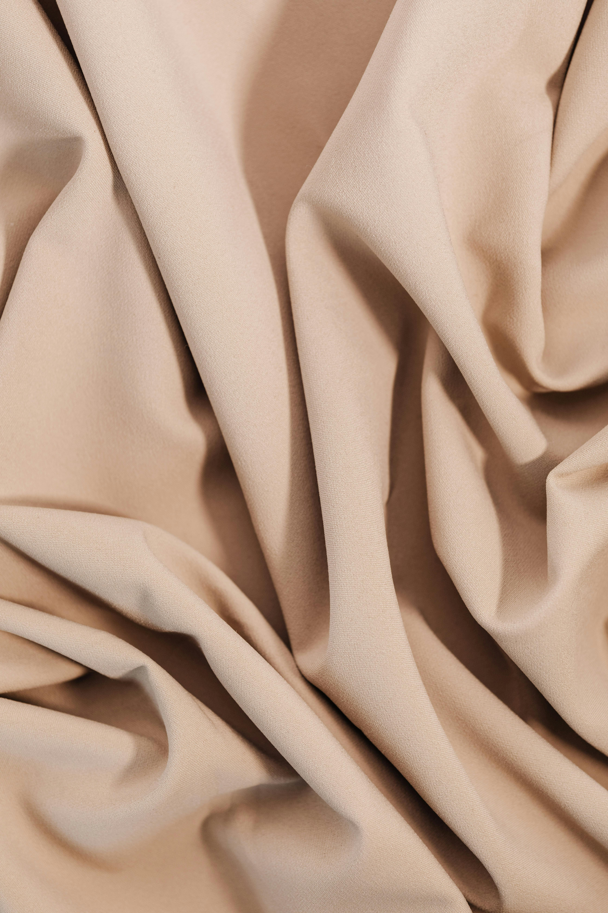

Khi ánh nắng chói chang của mùa hè gõ cửa, giới mộ điệu thời trang lại tìm về với Natural Linen (Vải lanh tự nhiên) như một chốn an trú hoàn hảo. Không lộng lẫy, bóng bẩy như lụa tơ tằm hay đứng phom nghiêm nghị như Egyptian Cotton, Linen chinh phục phái đẹp bởi vẻ đẹp mộc mạc, phóng khoáng và đậm chất thơ.
Được dệt từ những sợi xơ của thân cây lanh (flax) hoàn toàn tự nhiên, quá trình sản xuất đòi hỏi sự tỉ mỉ để giữ lại những đặc tính nguyên bản nhất. Chính cấu trúc sợi rỗng đã mang đến cho Linen độ thoáng khí đỉnh cao và khả năng thấm hút mồ hôi cực tốt, tạo cảm giác mát mẻ, nhẹ tênh ngay khi vừa chạm vào làn da.

Bản Tuyên Ngôn Của Phong Cách "Effortless Chic"
Từng có thời gian người ta e ngại Linen vì đặc tính dễ nhăn của nó. Nhưng ngày nay, qua lăng kính của thời trang cao cấp, những nếp gấp ngẫu hứng ấy lại trở thành biểu tượng của phong cách "Effortless Chic" – sự sang trọng mà không cần cố gắng. Mặc một chiếc váy Linen dáng suông hay chiếc sơ mi lanh bung cúc hờ hững dạo bước trên bãi biển, bạn toát lên một phong thái tự do, kiêu hãnh và hoàn toàn thư thái.
Tại VIORA, các thiết kế từ chất liệu Natural Linen luôn được chúng tôi tuyển chọn từ những thước vải cao cấp nhất, kết hợp cùng kỹ thuật cắt may tinh giản để tôn lên trọn vẹn nét đẹp mộc mạc. Hãy để Linen đồng hành cùng bạn trong những chuyến nghỉ dưỡng, biến cái nóng mùa hè trở nên dịu dàng và đầy phong cách.
"Đừng cố ủi phẳng hoàn toàn một chiếc áo Linen. Hãy khoác nó lên mình với tất cả sự trân trọng dành cho vẻ đẹp nguyên bản và tự do nhất."